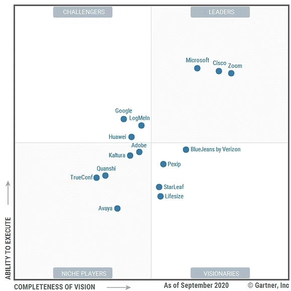

EXEMPLE
Newsletter
Definition:
Une newsletter peut être un excellent outil de veille technologique, car elle permet de recevoir régulièrement des informations ciblées sur les tendances, innovations, et nouveautés dans un domaine spécifique.
Stratechery (de Ben Thompson) :
Fournit une analyse approfondie des stratégies des grandes entreprises technologiques comme Google, Apple, et Microsoft.
TechCrunch:
Propose une newsletter quotidienne sur les nouveautés des entreprises technologiques.
Voici un exemple du groupe gartner Group:
Ici, vous pouvez apercevoir un graphique envoyé grâce à une newsletter, dans lequel vous pouvez observer plusieurs entreprises représentées. Le but de ce graphique est de montrer quelle entreprise est la plus susceptible de lancer de nouvelles innovations technologiques grâce à plusieurs critères tels que :
- la capacité d’investissement en recherche et développement
- le niveau d’adoption des technologies émergentes
- la diversité des brevets déposés
- ainsi que l’agilité dans l’adaptation aux tendances du marché.
